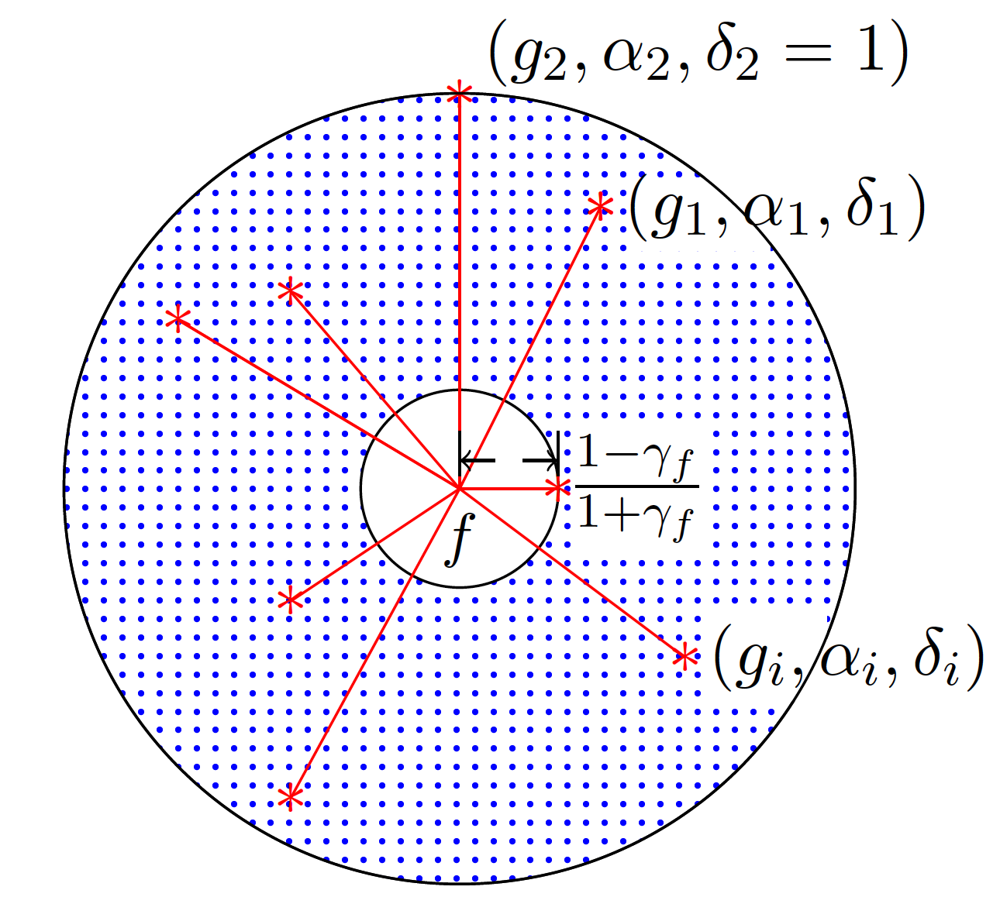
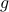
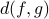
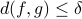
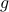
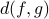
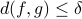
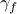

Approximating a non-submodular function by bounding the function marginals with submodular functions
|  |
Discrete optimization appears in a multitude of problems of steering of complex networks, sensor selection, game theory etc. The feasibility set of such problems grows exponential with the set size and hence some structure in the optimization cost is essential. The maximization of submodular functions has gained huge popularity in present times due to their guaranteed performance bound. A simple greedy selection can give optimality guarantees. However, in a lot of problems the empirical experiments have suggested that even some non-submodular functions have good performance. Some popular functions that appear in complex networks and control theory are negative trace of Gramian inverse, minimum eigenvalue. We have proposed a novel technique of approximate submodularity to better explain the mysterious performance of non-submodular functions.
The approximate function with a divergence between two functions  and , , is defined as follows: A function , possibly non-submodular is referred as approximate submodular if there exists a non-decreasing submodular function such that . Intuitively, the approximate submodularity introduces the idea of closeness to being submodular using the notion of a divergence. The proposed concept of approximate submodularity can not only help in deriving tighter performance bounds for metrics that appear a lot in the applications of complex networks but also provide interesting and unexpected insights into the structure of the identified hidden submodular function. The concept of approximate submodularity is better understood by the introduction of the region of submodularity (ROS) of a given function which is defined as.
and , , is defined as follows: A function , possibly non-submodular is referred as approximate submodular if there exists a non-decreasing submodular function such that . Intuitively, the approximate submodularity introduces the idea of closeness to being submodular using the notion of a divergence. The proposed concept of approximate submodularity can not only help in deriving tighter performance bounds for metrics that appear a lot in the applications of complex networks but also provide interesting and unexpected insights into the structure of the identified hidden submodular function. The concept of approximate submodularity is better understood by the introduction of the region of submodularity (ROS) of a given function which is defined as.
where  is the submodularity ratio of the given function . Intuitively, the ROS is a collection of all feasible submodular functions which are close to the given function , using the notion of defined divergence.
The proposed analysis of important non-submodular functions has established that greedy selection does offer guaranteed performance in terms of optimality. It will enable the use of these metrics in the important problems of sensor selection, matrix (Gramian) inversion for observability, Bayesian A-optimality etc. The output solution of the greedy algorithm is difficult to verify in terms of the optimality due to an exponential size of possibilities. With the proposed concepts, the performance of the greedy algorithm when applied to the large complex networks can be quantized.